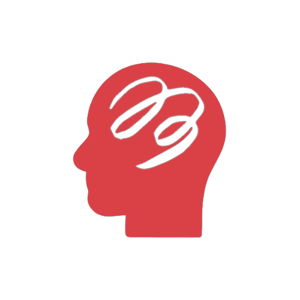
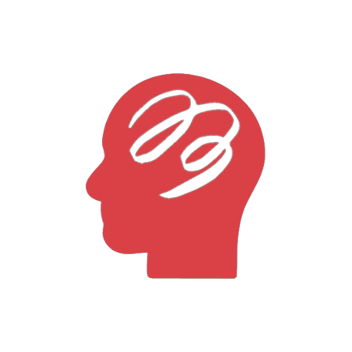

¿Qué es la salud mental?
"Es el estado de bienestar en el cual la persona es consciente de sus propias capacidades, puede afrontar las tensiones normales de la vida".
Trastornos mentales más frecuentes

 
Creating Back Button

Creating Back Button